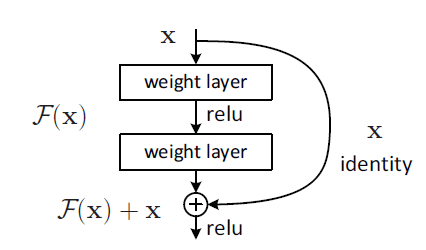
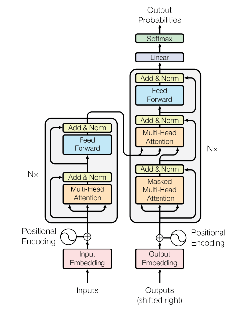
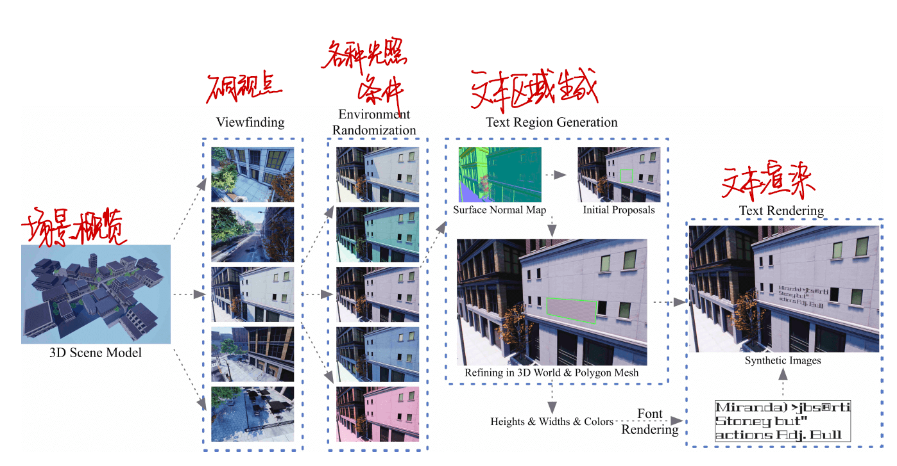
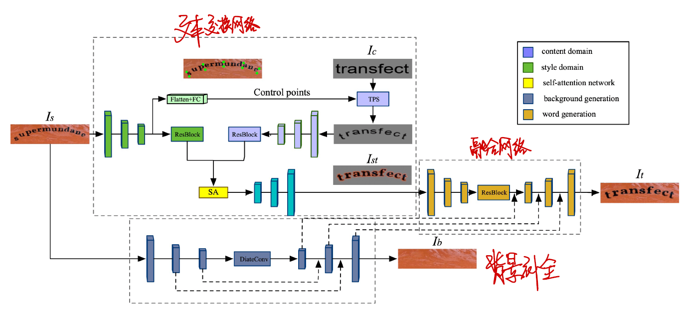

前言
在开学后经历的一阵迷茫后感觉还是要看论文啊…就算看不太懂也要看…目前想做的还是跟师兄差不多的自然场景文字编辑的方向。也不知道我这个菜鸡啥时候才能开始实验 orz
正文
ImageNet classification with deep convolutional neural networks
全文
视频
看了看李沐老师的带读论文，先看摘要，再看简介和结论，看看这篇论文是否对你真的有用。觉得有意义后接着往下读。太老的论文可以不用看，比如这篇论文，Alexnet，算是深度学习的鼻祖，但是从现在看来还是有很多局限性。
内容
- 引入了新的激活函数 ReLU，引入后比起当时流行的 训练时收敛更快
- 使用了两个 GPU 分开进行卷积操作
- 对输入的数据进行 Local Response Normalization，局部响应归一化
- 引入 Pooling layer，池化操作
- 对于降低过拟合：
- Data Augmentation 数据增强，对数据进行一些预处理，如把一些图片人工地变大等，这样数据量就更大变化就更多了
- Dropout 层，50% 概率把隐藏层的输出值变成 0
- 使用 SGD 进行优化
代码
Deep Residual Learning for Image Recognition
全文
视频
内容
提出了 CNN 难以训练的问题，将 CNN 的主干部分换成 ResNet 以降低训练难度，用在 Image Recognition 问题上。

就是把前几层的输出放到后面几层的输入中进去？
在损失函数很难下降后，加入残差网络效果明显。
代码
Attention Is All You Need
全文
视频
内容
-
将 Transformer 用在机器翻译上，得到了良好的效果
-
Transformer 比起 CNN 和 RNN 的优势：
-
RNN 难以并行，训练速度慢
-
CNN 难以对间隔较长的序列产生计算
-

Transformer 的结构图，一个 Encoder 一个 Decoder
注意力函数是将 query 和 key-value 映射成输出的函数，输出是 qkv 的加权和。
引入了多头注意力机制
代码
Generative Adversarial Nets
全文
视频
内容
-
设计了一个 G 识图抓住数据的分布
-
设计了一个 D 辨别数据是生成的还是原本就有的
-
损失函数：
其中 表示采样中的真实分布， 表示采样中的噪音分布。
代码
AN IMAGE IS WORTH 16X16 WORDS TRANSFORMERS FOR IMAGE RECOGNITION AT SCALE
全文
视频
内容
transformer 本来使用在自然语言处理领域，这篇论文将图片视为 16x16 的单词（称之为 patch）。
在大规模的语料库上做训练，就能取得比 CNN 更好的效果。
训练时间更短，效果更好。
代码
Editing Text In The Wild
全文
内容
解决在自然图像中编辑文本，同时保留背景和文本的风格的问题。
提出了一个端到端的可训练风格保留网络（SRNet），包含 3 个 模块：
- 文本转换模块（TCM）——将文本改为目标文本
- 采用编码-解码器 FCN
- 骨骼引导学习机制
- 使用 dice loss 而不是交叉熵损失函数
- 背景修补模块（BIM）——擦除原始文本，用适当的纹理填充文本区域
- 按照“U-Net”的总体架构
- 加入了对抗学习
- 融合模块——结合来自前两个模块的信息，生成编辑后的图像
- 引入 VGG-loss，包括感知损失和风格损失
有的图像仍保留原始文本的阴影，归因于数据库的不足，尝试增加更多字体效果。

代码
STEFANN: Scene Text Editor using Font Adaptive Neural Network
全文
内容
一种在字符级上修改图像文本的方法，提出了两种不同的神经网络架构：
- FANet 实现与源字体结构的一致性
- Colornet 保留源颜色
方法：
- 选择要替换的源字符
- 生成二进制目标字符
- 颜色转移
- 字符放置
这个方法局限于大写英文字母。
代码
Multi-Content GAN for Few-Shot Font Style Transfer
全文
内容
端到端堆叠条件 GAN 模型生成字体（适用于英文字母），设置两个子网络：
- GlyphNet 对字形建模
- OrnaNet 用颜色和纹理合成
两个网络都遵循 CGAN，要求只使用少量的字形，生成整套英文字母。
代码
Word-As-Image for Semantic Typography
全文
- [2303.01818] Word-As-Image for Semantic Typography (arxiv.org)，2023.3.6 号发出，绝对够新！
内容
根据输入文字的含义（支持中英文），在不影响字体可读性的前提嵌入文字含义的图形特征。生成字体 LOGO，并且是矢量图的格式。
-
使用文字轮廓的向量化图形表示字形，轮廓线通常由直线，Bezier 曲线或 b 样条曲线的集合来表示。
-
使用 Latent Diffusion Models，潜在扩散模型（文本到图像的扩散模型）。
-
分数蒸馏。
-
VectorFusion，利用 SDS 损失来完成文本到 svg 的生成任务
代码
UnrealText: Synthesizing Realistic Scene Text Images from the UnrealWorld
全文
内容
在训练时模型性能常常因数据集不足而受限，这篇论文提出了 UnrealText——用 UE4 生成自然场景下文字的数据集。
场景文本检测器依然依赖于大量人工注释的真实世界图像，使用合成数据进行训练的方法被广泛接受。
合成数据的优势：
- 词汇量很大
- 可以提供背景、字体、光照条件的多样性
- 可以很多倍的数据样本
方法：

- 生成视点：设置一个物理约束的三维随机行走，配备辅助摄像机锚
- 调整环境照明：随机改变场景中所有光源的强度、颜色和方向、还添加了雾条件，并随机调整其强度
- 提出文本区域
- 生成文本前景
- 检索 RGB 图像及其对应的文本位置和文本内容-形成合成数据集
实验结果证明我们所合成的数据很好使！
代码
SwapText: Image Based Texts Transfer in Scenes
原文
内容
在场景图像中变换文本，同时保留原始字体、颜色、大小和背景纹理。
- 提出新颖的文本交换网络，仅替换前景图像中的文本标签
- 学习背景补全网络来重建背景图像
- 将生成的前景图像和背景图像通过融合网络生成单词图像
获得大量带注释的训练图像已经成为训练深度神经网络的瓶颈，提出使用几何变换进行数据增强。
将这个任务分成三个网络：
- 文本交换网络
- 形状变换网络 CSTN，使用 2K 基点定义文本形状
- 自注意力机制
- 背景补全网络
- GAN，损失函数同时考虑 损耗和 GAN 损耗。
- 融合网络
- 采用编码器-解码器结构
- VGG-19
